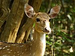
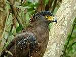
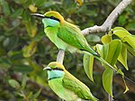
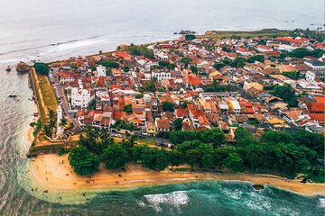
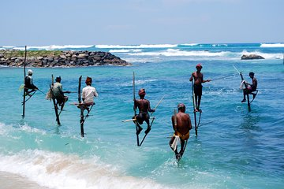
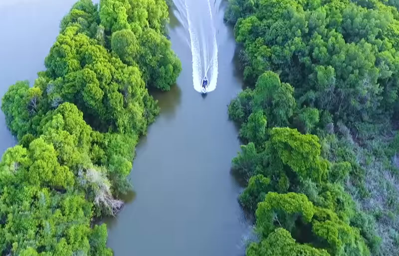
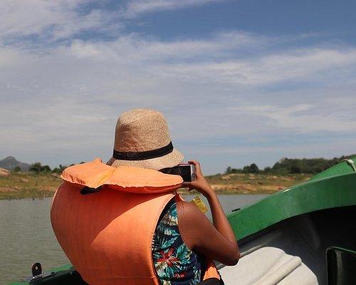

Places for Sri Lanka boat tours
Places for Sri Lanka boat tours exceed many dozens because Sri Lanka boasted to have a large number of Rivers, lagoons and Lakes. In fact, the island is surrounded by an endless ocean. Sri Lanka is a tropical nation and blessed with the tropical monsoon that soaks the island with heavy rain. Lanka has a large number of rivers, lakes and lagoons, providing many dozens of places for Sri Lanka Boat Tours. Venturing on Sri Lanka boat tours is one of the best ways of exploring inland water resources and the attraction accompanying, the Sri Lanka boat tours are truly spectacular. Keep on reading and get to know where you should head on to your next Sri Lanka boat tour
6 Best boat tours of Sri Lanka
Muthurajawel wetland Boat tour-ideal boat tour for travellers, who look for a day tour from a hotel in Colombo or Negombo. This is a few hour’s trips from most hotels in Colombo. Madu river estuary Boat tour – Ideal for travellers staying in Colombo, the west coast of Sri Lanka and the southern coast of Sri Lanka. Madu River boat tour is one of the most popular programs among travellers. Undoubtedly Madu Riverboat tour is the most popular boat tour in Sri Lanka and a very convenient day tour place and included in the Bentota day trip from Colombo. Koggala lagoon Boat tour- This is an ideal boat trip for travellers staying in the south od Sri Lanka. Boat tour is popular among travellers that stay on the southern coast. Koggala lagoon boat tour is included in most Galle one-day tours from Colombo. Hikkaduwa Glass-bottom boat tour – A perfect opportunity for travellers who stay in Colombo, the west coast of Sri Lanka and the south coast. This boat tour allows the guests to see a fascinating collection of exotic fish species, sea turtles and coral reefs in the marine sanctuary of Hikkaduwa. The glass-bottom boats allow you to explore the sea bed without jumping into the water. Chandrika Lake Embilipitiya is- Ideal boat trip if you stay in Udawalawe. Chandrika lake boat tour is not for most travellers due to the remoteness from Colombo. However, it is visited by some travellers, who are heading to Udawalawe national park. Bentota River boat tour- Perfect boat trip for travellers on the west coast, south coast and Colombo. By far Madu River boat tour is the most popular boat tour on the west coast and a boat tour of the Bentota river follows. Bentota Boat tour is very popular among travellers, who spend their beach holiday on the west coast beaches and southern coast beaches. Sri Lanka is a tropical nation and blessed with the tropical monsoon that soaks the island with heavy rain. Sri Lanka has a large number of rivers, lakes and lagoons that are beautiful spots to explore. Making boat trips is one of the best ways of exploring inland water resources and the attraction accompanying it, the boat trips in Sri Lanka are truly spectacular. Keep on reading and get to know where you head on to your next Sri Lanka boat trip.
What type of boat tours are available in Sri Lanka?
Boat tours in Sri Lanka can be categorized under a few categories as below. These boat tours cater to the specific requirements of the travellers. eg. the whale watching tour caters to travellers, who wish to witness the whales in the southern sea of Sri Lanka and the speed boat tour is performed only as a recreational activity.
Boat tour on the river- One of the very popular boat tours in Sri Lanka to see the fauna and flora-rich riverine vegetation in Sri Lanka Boat tour in the sea – Popular among foreign travellers, who like fishing, diving, snorkelling and exploring marine sanctuaries. Whale-watching boat tour – this type of boat torus available only in a few places such as Mirissa. organized on pre-booking only to see whales and dolphins. Speed boat rides – very popular recreational activity and can be done in west coast water sports centres such as Bentota watersport centre.
6 Best places for Sri Lanka boat tours
Escape from the hustle and bustle of Sri Lankan city streets to languid rivers in the countryside with Sri Lanka boat trips and soak yourself in riverside mangrove forests, and villages, and explore the rich wildlife, sacred spots and ancient heritage. Live in the cacophony of sights as nature captivates you and intrigues your senses. On your Sri Lanka tour, spend some time over the glinting waves. And contemplating water-based activities in picturesque countryside rivers like the Madu river estuary and the Koggala lagoon? Read on to find out more about Sri Lanka boat trips!
.jpg)
.jpg)
.jpg)
Muthurajawela boat trip
Distance from Colombo 10km Time to reach Muthurajawela from Colombo 30 minutes Muthurajawela is situated around 10 kilometres from Colombo and its borders are marked by Negombo lagoon from the northern direction, Hendala towards the south, Uswetakeiyawa and beaches of Pamunugama towards the west and Colombo-Negombo main road in the direction of East. Muthurajawela boat trip is one of the popular Sri Lanka boat trips and many travellers, who spend their beach holidays in Negombo and Colombo take part in this program. Muturajawela wetland is a Ramsar wetland just north of Colombo near the popular beaches of Negombo, is a vast tract of land- most of Muthurajaela is hidden under the water even in the driest period of the dry season
Most travellers, who travel to Negombo primarily are sun-worshippers; they enjoy the sun, sea, and sand, most travellers of Colombo skim over historical places, shopping malls, temples, and recreation centres but most of these travellers miss one of the most important natural attractions of Sri Lanka, which is none other than Muthurajawela wetland. The history of Muturajawela believes to be going back several centuries to modern times. It had been a thriving rice field in the western province of Sri Lanka. According to historical information, Muthurajawela had been the main source of rice for the people of the Kotte kingdom. During the kingdom of Kelaniya, there had been a mangrove forest in Muthurajawela. Muthurajawela wetland had been far bigger in the past than today, but due to the encroaching, a portion of the valuable wetland is turned into farmland and settlement. This habit of filling the valuable wetland with earth continues even today
he name, Muthurajawela itself is derived from one particular rice variety cultivated in Muthurajawela. Muthurajawela, the word can be divided into three parts Muthu =pearl, raja=King and wela= rice field, denoting “the field, where a variety of rice, looks like mutu (pearl) cultivated for the king”. There is another legend with regards to the beginning of the name of Muthurajawela. When King Sri Wira Parakramabahu (1473-1497) reigns in the country, a farmer called Muthuraja arrived in Sri Lanka and introduced a variety of rice from India. The king was very pleased with the introduction of a new rice variety due to its unique taste. Later the farmer was provided with all the labour and other facilities by the king, in order to carry on the cultivation of rice in Muthurajawela. Not only the farmer was given the king’s patronage but also the rice field was named after the Indian farmer who introduced the rice variety. The rice cultivation was abandoned with the arrival of the Dutch on the island. Dutch administration built the Dutch canal that goes through Muthurajawela. The canal begins in Negombo and goes along the beaches of the west coast up to North-West Sri Lanka. The canal was used for transporting goods from northwest Sri Lanka to Colombo and Negombo. Unfortunately, the salty water of the canal mixed with the freshwater of Muthurajawela, making it unsuitable for rice cultivation. The abandoned rice field has gone through many ecological changes in the past and it has turned into the most important wetland on the island today. Today Muthurajawela is measured to be around 20 Square kilometres. According to naturalists, it is one of the most important wetlands with very rich bio-diversity in the country. About 40 species of very rare flora species can be found among the 179 species of grass, plants, shrubs, and trees in Muthurajawela. It has a very high concentration of avian fauna species. Especially Muthurajawela is inhabited by a large number of aquatic bird species. 130 different species of birds were recorded in Muthurajawela, out of which 85 species are resident birds while 45 species are rare migrant bird species. Muthurajawela wetland is the home of many rare species of fish on the island. There are several species of butterfly that also can be seen in Muthurajawela. Muthurajawela was declared a wildlife reserve on 31st October 1996. Muthurajawela is divided into two parts part one is spread over 1028 hectares while part two occupies more than 250 hectares. Muthurajawela is one of the most popular places among the holidaymakers on the island for bird watching. The best way to explore Muthurajawela is with a boat and a boat tour is offered as a one-day excursion from nearby hotels.



Madu River estuary
Lanka boat tour at Madu river Madu River safari not only gives you the closer look at the beautiful riverine Eco-system of Madu River estuary but also you get an opportunity to learn about the village life of Sri Lanka. There are three places where the boaters are stopping the boat during the Madu River safari. Madu River safari usually lasts about 2 hours. Madu river safari is one of the most popular boat rides among holidaymakers anchored on the west coast of Sri Lanka. A large number of travellers especially people, who spend their beach holidays on the west coast take part in Madu Rive safari. Normally, Madu river boat ride is organized with a combination of other major tourist attractions in Bentota and the west coast such as Bentota beach, Sea turtle conservation centre, mask museum, gem museum, Hikkaduwa beach etc. Therefore the tourists are able to visit many interesting places, along with the Madu River estuary. Seerendipity tours organize this one-day tour many times a week and you can contact us, in case you are also willing to join one of the groups. You can also organize your own Madu river safari with Seerendipity tours but there is a slight increase in price. Usually, the Madu river boat ride is offered as a combination of a sightseeing tour of southern Sri Lanka such as a Galle tour or Bentota sightseeing tour. This one-day tour includes many activities targeting many interesting places in Southern Sri Lanka such as exploring the coral reef in Hikkaduwa, visiting a sea turtle farm, learning the history of Galle Fort, moonstone mines in Sri Lanka, Learning the arts and crafts of Sri Lanka at Ariyapala mask museum, Visiting the maritime museum of Galle fort, etc.



What do we see on the Madu river safari?
Madu river safari allows travellers to witness the rich riverine environment of Sri Lanka. The Madu rover estuary gives you a perfect opportunity to see the endangered mangroves. The mangrove forests are depleting very fast around the world, and so is in Sri Lanka. You will traveller on a single motored boat and you encounter a few mangrove lagoons along the way. Apart from mangroves, the boat tour is a perfect opportunity to see many other native trees and plants such as Balza trees, manger trees, coconut trees, and jackfruit trees. The most common animal to see on the Madu river safari is the water monitor, and you have the opportunity to witness them throughout the trip. There is an opportunity to see crocodiles on the Madu river safari but the chances are very narrow. Monkeys, lizards, snakes, and a large number of avian fauna species also can be seen on the boat tour. Hikkaduwa beach holiday package 7 days, Sri Lanka 7 days tour, Sri Lanka Boat Tours, Sri Lanka Boat Trips This luxury beach holiday package includes 7 days (6 nights) of accommodation in a luxury hotel in southern Sri Lanka. The package also includes arrival-departure transfers, daily 2 meals, and all taxes. The travellers can book optional sightseeing tours with Seerendipity tours through the resident guide.
Hikkaduwa boat trip
On the list of wonderful Sri Lanka boat trips, Hikkaduwa is our fourth choice. Hikkaduwa is a heaven for beach holiday lovers, divers, snorkellers and anything associated with the sea. This boat on the west coast of Sri Lanka enables you to sail on a glass-bottom boat offering spectacular views of the Hikkaduwa marine sanctuary
.jpg)
.jpg)

>
Chandrika Lake
Chandrika Lake Distance from Colombo 194 km Time to reach Hikkaduwa from Colombo 4 hours 30 minutes Duration of the boat tour 1-2 hours Sri Lanka boat tour at Chandrika Lake A quite unpopular hidden gem and still underexplored due to the unpopularity. Chandrika Lake is situated in the Sabargamuwa province near Udawalawe national park, which is a perfect spot for an enjoyable boat trip. The lake is hidden in the thickly forested locality and one of the best places to spot many indigenous as well as migratory bird species. You will be able to spot many species of birds such as herons, falcon, spot-billed pelicans, and the cormorant, as you glide through the azure waters. 3 days southern sri lanka Venture on a Southern Sri Lanka tour to see the important tourist attraction on Sri Lanka’s south coast such as Wildlife parks, beaches, forts, museums, parks and town
Bentota River boat tour
entota River is located bordering the Bentota beach resort and it is 100km south of Colombo. Bentota River is located between the Madu river estuary and Colombo. When it comes to boat tours on the west coast of Sri Lanka Madu river boat tour is the most popular and Bentota boat tour comes behind it. However, I feel the boat tour of Bentota River is more interesting than the boat tour at Madu estuary. But coat tour of Madu estuary is widely popular among the local as well as foreign travellers and therefore, most travellers venture on the Madu river safari. At a time madu river can be very crowded due to the concentration of a large number of travellers. When it comes to the Bentota river boat tour, you rarely encounter any other party on the boat tour. The Bentota boat tour is not as popular as the Madu river safari and therefore it does not attracts a large number of travellers. Only a few numbers boat tours take place on a day means the wild animals are less disturbed and impact on the nature is minimal. If you have done bait boat tours based on Madu river estuary and Bentioat river you can ascertain it.
Bentota boat tour is ideal for wildlife enthusiasts and visitors are able to witness many animals such as crocodiles, water monitors, monkeys and snakes during the Bentota boat tour. But the visitors encounter wild animals very rarely on the Madu River boat tour, this is mainly due to the large number of motor boats that takes tourist along the river every day. On the other hand, the Mangrove forest in the Bentota River is far bigger than the Madu river estuary.
.jpg)
.jpg)
.jpg)
Mangrove tunnel
You might be wondering what the mangrove tunnel is. Because tunnels are to be found in cement, metal and rock but a tunnel made of mangrove, is definitely a little bit awkward. Even though it sounds a bit strange, you can witness a mangrove tunnel during boat trips. Your boat will travellers through the mangrove tunnel. The mangrove tunnel is formed by huge mangrove trees, which are rising up to many hu7ndred feet in some places. These giant mangrove trees reside on the shallow, muddy surface of the river bank. Its roots are poking into the air and work like noses trills of mangrove trees, and help the tree to absorb air into the system.
Whether it is Madu River boat safari or Bentota River boat safari you will encounter a mangrove tunnel. But the mangrove tunnel at Bentota river is much bigger than the tunnel found in Madu river estuary. The Mangrove tunnel in Bentota River is many hundred feet high in some areas and its with roughly about 20 feet. The tunnel of the Bentota River is about 200 meters in length and it takes about 10 minutes to go from one end to the other in a motorboat. However, the mangrove tunnel of Madu river estuary is much smaller and less attractive than the tunnel found in Bentota River. Furthermore, the Bentota River is very wide and deeper than the Madu River estuary, Bentota River is the 5th biggest River in Sri Lanka. However, Madu estuary is smaller compared to the Bentota river and shallower than the Bentota River. There are 64 islands of varying sizes within Madu River estuary but there is no island to be found in the Bentota River, and it is flanked by the mainland.
Udavalawe
Udawalawe National Park is a national park on the boundary of Sabaragamuwa and Uva Provinces in Sri
Lanka. The park was created to provide a sanctuary for wild animals displaced by the construction of the
Udawalawe Reservoir on the Walawe River, as well as to protect the catchment of the reservoir. The reserve
covers 30,821 hectares (119.00 sq mi) of land area and was established on 30 June 1972.[1]
Before the designation of the national park, the area was used for shifting cultivation (chena farming). The
farmers were gradually removed once the national park was declared. The park is 165 kilometres (103 mi) from
Colombo. Udawalawe is an important habitat for water birds and Sri Lankan elephants. It is a popular tourist
destination and the third-most visited park in the country.[2
 1
2
3
4
5
·····
20
1
2
3
4
5
·····
20
ABOUT SL TRAVELERS
Information on listed products and services are provided by the operator and were correct at the time of publishing. Please visit the operator’s website for further information. Sri Lanka Tourism makes no representations whatsoever about any other websites which you may access through this website. Some websites are linked to the Sri Lanka Tourism website but are independent from Sri Lanka Tourism and therefore, are not under the control of Sri Lanka Tourism. Sri Lanka Tourism, therefore, does not endorse or accept any responsibility for the use of websites which are owned or operated by third parties and makes no representation or warranty in relation to the standard, class or fitness for purpose of any services, nor does it endorse or in any respect warrant any products or services by virtue of any information, material or content linked from or to this site.
@SriLankanBestTravels | developed by Suhas | 2022